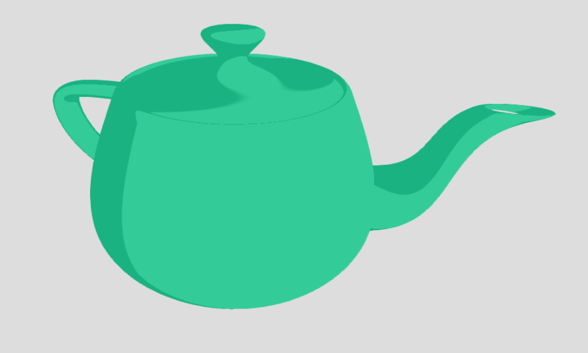
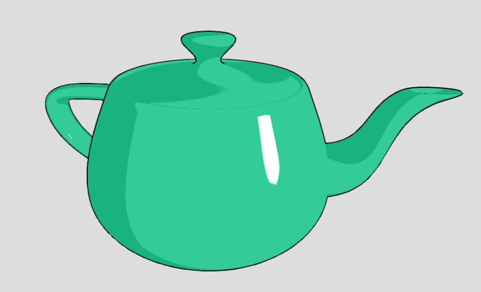
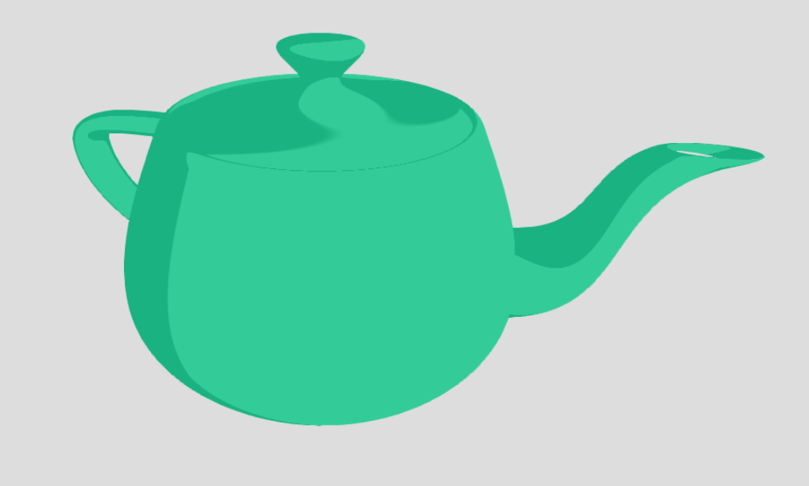
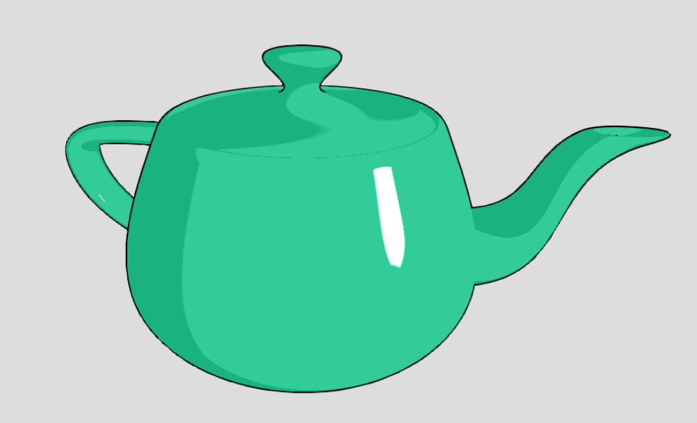

|  |  |
 |
|  | |
 |
We have implemented basic two-tone cel shading along with outline drawing using the three.js framework from project 3-2. We are currently on-track with our proposed schedule.
Our implementation of diffuse cel shading uses the same formula used in the Blinn-Phong model for calculating reflectance of diffuse surfaces. We use only a light and a dark tone and color fragments using the light tone if the diffuse lighting component for that fragment is above a certain threshold, otherwise we use the dark tone. To prevent unsightly jaggies at the boundaries between the light and dark tones, we use the smoothstep function to interpolate values.
Again we start with the Blinn-Phong shading model. Specular highlights for cartoons are usually a solid white color, so we used pure white for any fragments where the specular component of the Blinn-Phong shading model is above a certain threshold.
Hand drawn cartoons usually have dark outlines around objects. To simulate this effect we implemented a separate outline shader. The outline vetex shader detects vertices that lie on an outline by calculating the dot product of the vertex normal with the position of the camera relative to that vetex. Vertices that lie on an edge should have a surface normal that is close to perpendicular to the view direction. Vertices with a dot product below a certain threshold will then have their positions shifted in the direction of the normal to raise them slightly above the surface. The outline fragment shader simply colors all of the fragments of this "inflated" model with the outline color. Once this first pass is done we draw in the same model again using the cel shader. The second pass will occlude the first model except in places where it was inflated, leaving only a silhouette of the outline model visible. This technique is fast and simple and allows for different outline thicknesses by changing the amount that vertices are shifted.
Currently we can render two-tone cel shaded objects with basic outlines. From here we can simulate more advanced artistic styles. This can be accomplished by using textures to simulate brush strokes or pencil strokes. Rather than use a step function to transition between different lighting zones, we can sample values from paint brush textures to simulate a watercolor or oil paint style. For outlines we can extend our current outline shader by using displacement to vary the roughness or thickness of outlines
We used the project 3-2 webGL renderer as a starting point for this project.
Wikipedia article on cel shading Wikibooks article on toon shading Giant Bomb article on cel shading Advanced Real-Time Cel Shading Techniques in OpenGL by Adam Hutchins and Sean Kim The Cel Shading Technique by Raul Reyes Luque X-Toon: An Extended Toon Shader by Pascal Barla, Joelle Thollot, and Lee Markosian